Build progress · updated October 21, 2026
Building the Kinn app
Where the iOS app demo stands: the interactive demo on this site, every screen of the app, the brand it's built in, and what comes next. The demo runs on simulated wearers; the learning math is real.
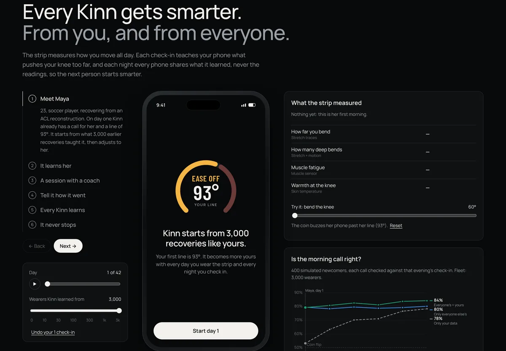
The demo
How Kinn learns, with the app inside it
A six-step walkthrough. The phone in the middle is the app; the charts on the right show the learning working.
- 1 Meet Maya: day one starts from 3,000 recoveries like hers.
- 2 It learns her: her line moves, her warning sign appears.
- 3 A session: ten reps live, full range checked.
- 4 Check in: one tap changes tomorrow.
- 5 Every Kinn learns: drag the wearers to 0 and back.
- 6 It never stops: week six, the curves.
The app, screen by screen
One loop a day: connect, push or rest, check in, learn
Captured from the demo. Every number on these screens comes from the model running in the page, not typed in.
First open
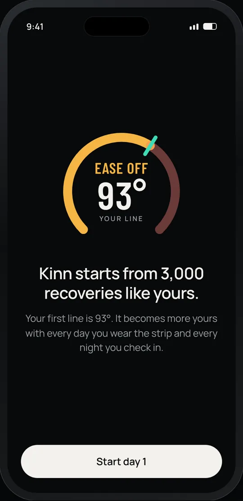
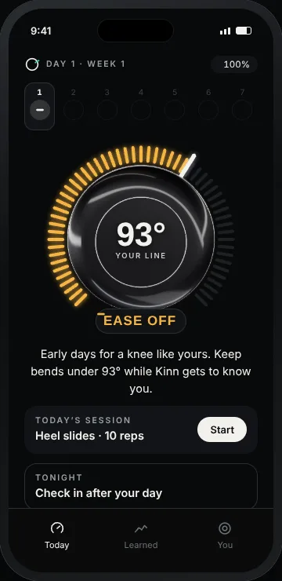
Every morning
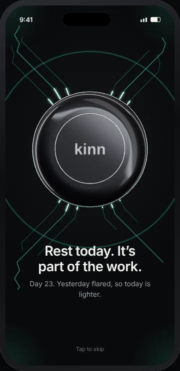
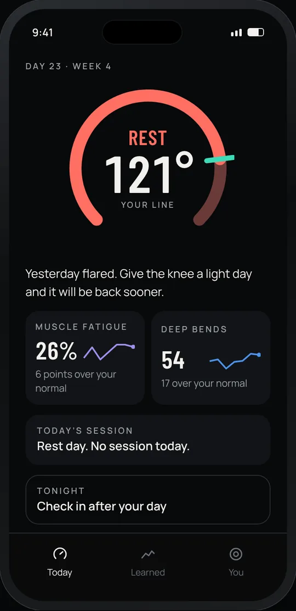
During the day
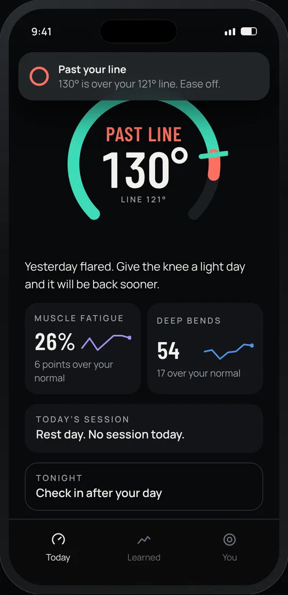
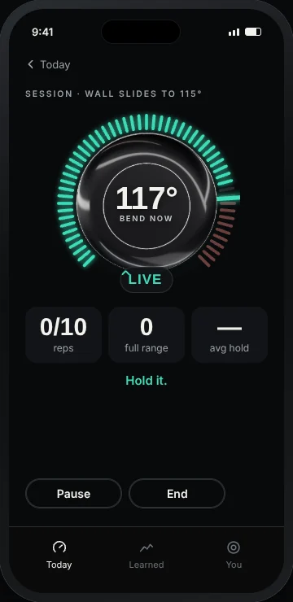
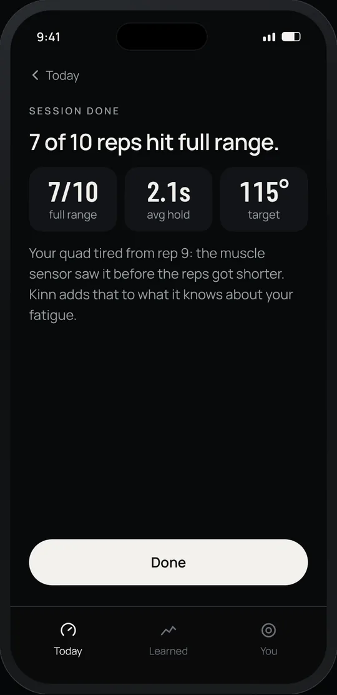
Every evening
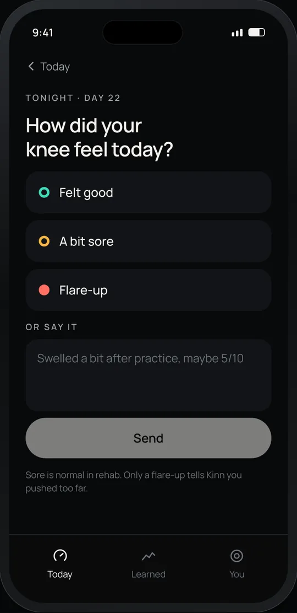
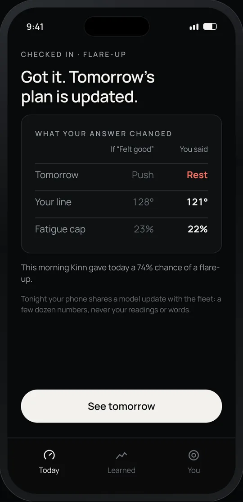
Anytime
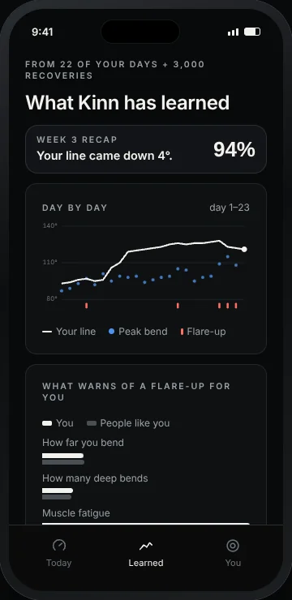
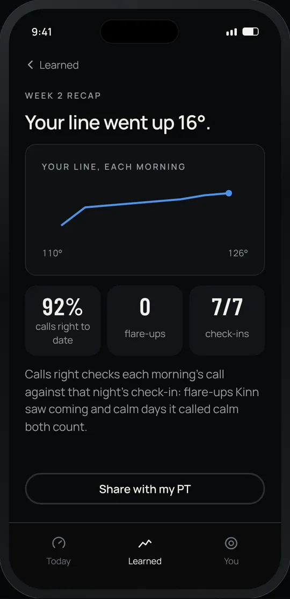
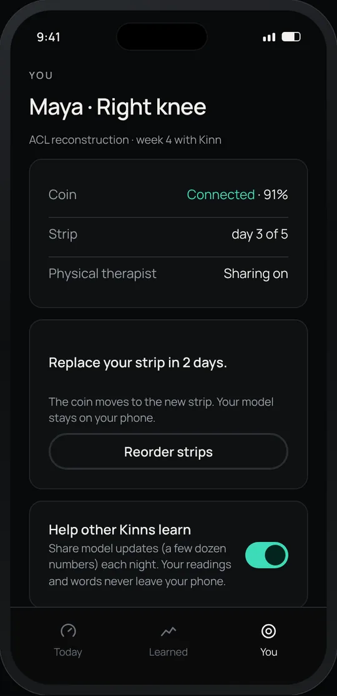
The brand
Graphite and ceramic, one light from the coin
WHOOP's discipline (dark, data-first, one answer a day) in Kinn's own look. The mark is the coin's ring with a tick at your line.
Logo
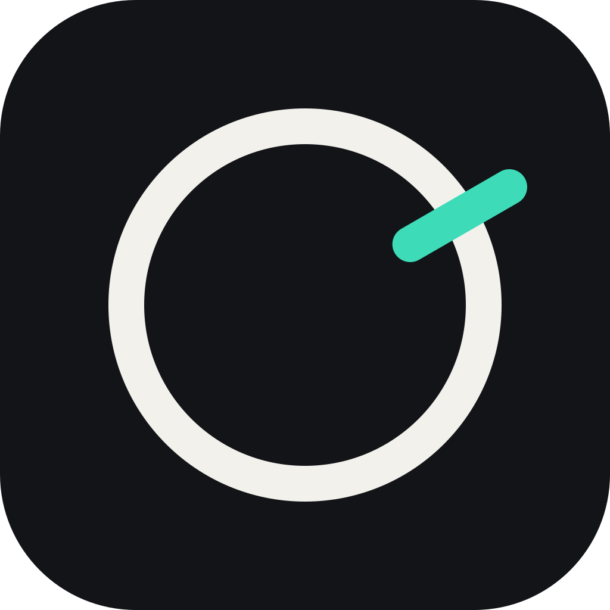
Calls: always a word and a shape
Type
Colour
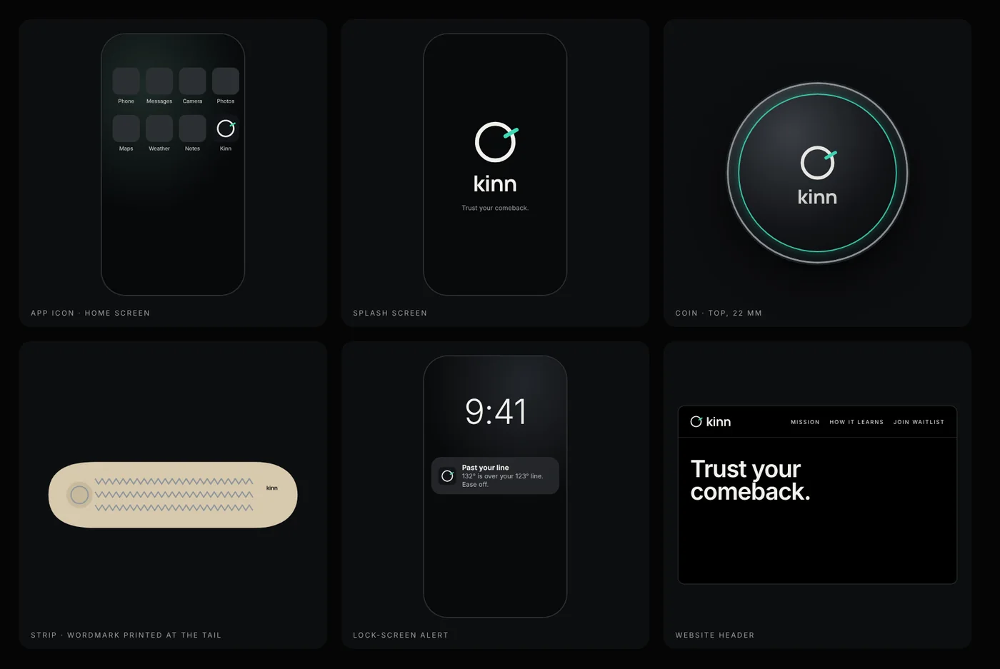
Log
What changed, and when
The app, rebuilt to the flow
Starting point, morning connect, Today with the new ring, guided sessions, check-in and "Got it", Learned with the week recap, and You. All in the brand system. This progress page.
Brand system and user flow
Logo (the coin's ring with a tick at your line), colours, type, components and voice. The user flow for the iOS demo: setup, the daily loop, every screen.
The demo joins the site
"How Kinn learns" moved onto this site at /learn, linked from the home page. Typed check-ins are read by Claude when the server has a key.
The learning engine
Simulated wearers, learning on each phone from check-ins, federated averaging across phones, and honest scoring on people the model never saw.
Next
What's coming
Logo in the app and site waiting on feedback
Swap the text headers for the new lockup once the mark is approved.
Notifications next
The 9pm check-in reminder and the lock-screen "Past your line" alert, shown on the demo phone.
A phone on your shin later
Live bend from a real phone's motion sensor, so judges can try the buzz themselves.